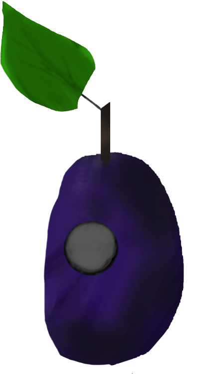
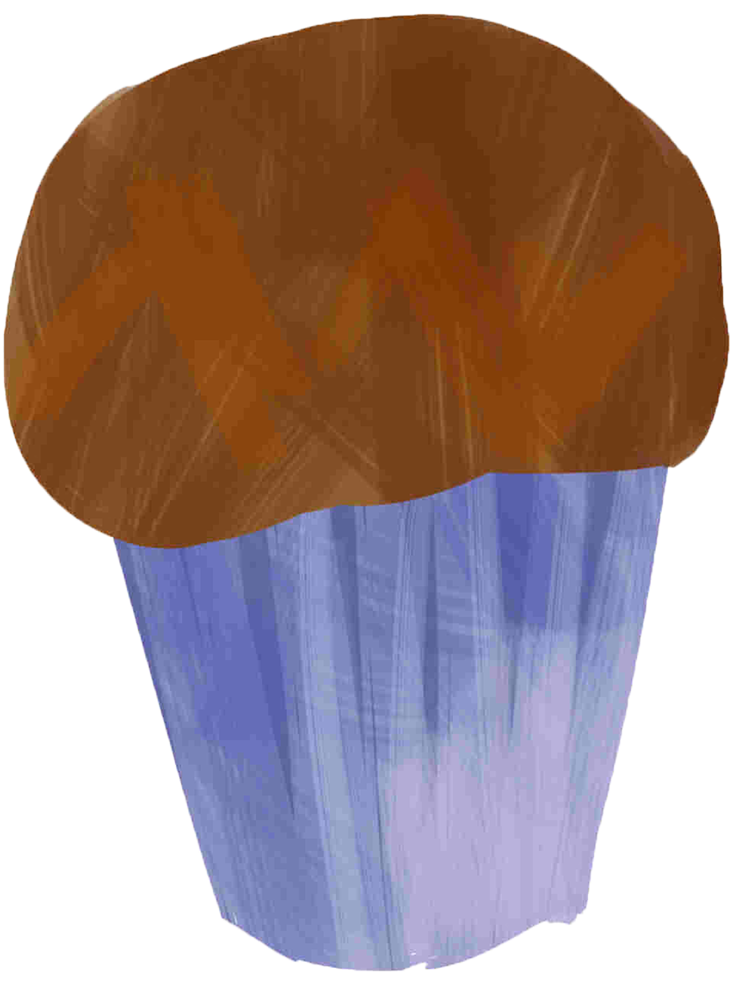
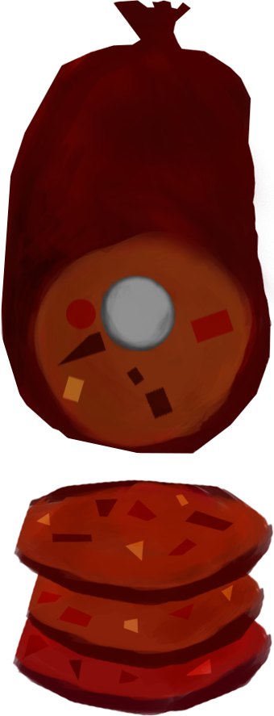
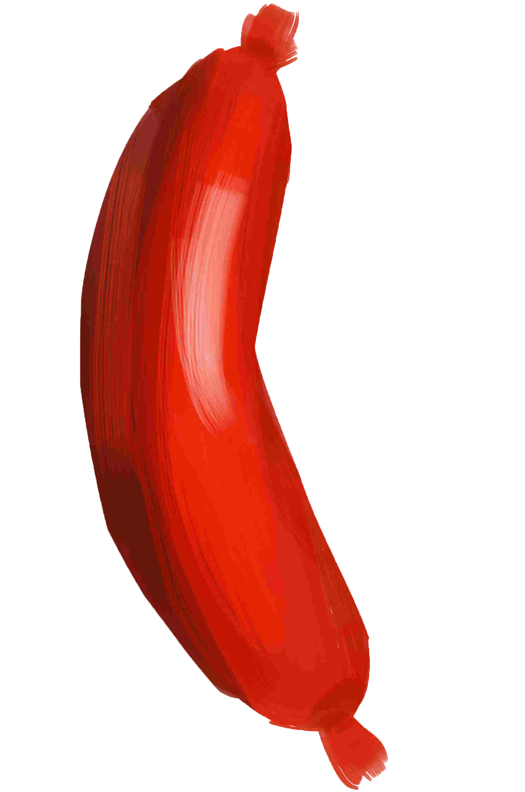
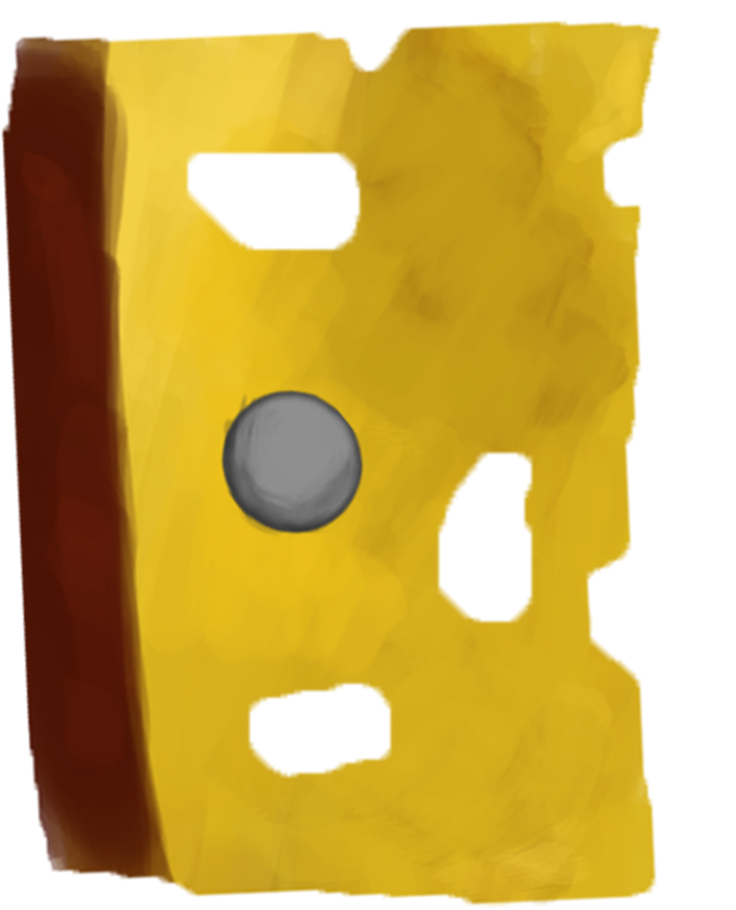

Apple trees are cultivated worldwide as a fruit tree, and is the most widely grown species in the genus Malus.
Apple trees are cultivated worldwide as a fruit tree, and is the most widely grown species in the genus Malus.
 It is also the name of the pomaceous fruit of the trees. Several species of pear are valued for their edible fruit and juices, while others are cultivated as trees. The top three varieties grown in Washington and Oregon are green Anjou, which made up about 54 percent of the total 2012 crop.
It is also the name of the pomaceous fruit of the trees. Several species of pear are valued for their edible fruit and juices, while others are cultivated as trees. The top three varieties grown in Washington and Oregon are green Anjou, which made up about 54 percent of the total 2012 crop.
 The orange is the fruit of the citrus species Citrus × sinensis in the family Rutaceae. It is also called sweet orange, to distinguish it from the related Citrus × aurantium, referred to as bitter orange. The sweet orange reproduces asexually (apomixis through nucellar embryony); varieties of sweet orange arise through mutations.
The orange is the fruit of the citrus species Citrus × sinensis in the family Rutaceae. It is also called sweet orange, to distinguish it from the related Citrus × aurantium, referred to as bitter orange. The sweet orange reproduces asexually (apomixis through nucellar embryony); varieties of sweet orange arise through mutations.

The subgenus is distinguished from other subgenera (peaches, cherries, bird cherries, etc.) in the shoots having terminal bud and solitary side buds (not clustered), the flowers in groups of one to five together on short stems, and the fruit having a groove running down one side and a smooth stone (or pit).
 The garden strawberry (or simply strawberry; Fragaria × ananassa) is a widely grown hybrid species of the genus Fragaria, collectively known as the strawberries. It is cultivated worldwide for its fruit. The fruit is widely appreciated for its characteristic aroma, bright red color, juicy texture, and sweetness. It is consumed in large quantities, either fresh or in such prepared foods as preserves, juice, pies, ice creams, milkshakes, and chocolates. Artificial strawberry flavorings and aromas are also widely used in many products like lip gloss, candy, hand sanitizers, perfume, and many others.
The garden strawberry (or simply strawberry; Fragaria × ananassa) is a widely grown hybrid species of the genus Fragaria, collectively known as the strawberries. It is cultivated worldwide for its fruit. The fruit is widely appreciated for its characteristic aroma, bright red color, juicy texture, and sweetness. It is consumed in large quantities, either fresh or in such prepared foods as preserves, juice, pies, ice creams, milkshakes, and chocolates. Artificial strawberry flavorings and aromas are also widely used in many products like lip gloss, candy, hand sanitizers, perfume, and many others.
Citrullus lanatus is a plant species in the family Cucurbitaceae, a vine-like (scrambler and trailer) flowering plant originally from sub-Saharan Africa. It is cultivated for its fruit. The subdivision of this species into two varieties, watermelons (Citrullus lanatus (Thunb.) var. lanatus) and citron melons (Citrullus lanatus var. citroides (L. H. Bailey) Mansf.), originated with the erroneous synonymization of Citrullus lanatus (Thunb.) Matsum. & Nakai and Citrullus vulgaris Schrad. by L.H. Bailey in 1930.
Ice cream (derived from earlier iced cream or cream ice[1]) is a sweetened frozen food typically eaten as a snack or dessert. It is usually made from dairy products, such as milk and cream, and often combined with fruits or other ingredients and flavors. It is typically sweetened with sugar or sugar substitutes.
Lollipops are available in a number of colors and flavors, particularly fruit flavors. With numerous companies producing lollipops, the candy now comes in dozens of flavors and many different shapes. They range from small ones which can be bought by the hundred and are often given away for free at banks, barbershops, and other locations, to very large ones made out of candy canes twisted into a circle.
Cherry pie is a pie baked with a cherry filling. Traditionally, cherry pie is made with tart rather than sweet cherries.[1] Morello cherries are one of the most common kinds of cherry used, but other varieties such as the black cherry may also be used.
Cherry pie is associated with Europe, North America and is mentioned in the lyrics of American folk songs such as Billy Boy. Due to the cherry harvest in midsummer coinciding with Canada Day on July 1 and America's Independence Day on July 4, cherry pie is often served on these holidays. It is also associated with the celebration of Washington's Birthday because of the legend of young Washington’s honesty regarding the felling of a cherry tree.

A cupcake (also British English: fairy cake; Hiberno-English: bun; Australian English: fairy cake or patty cake) is a small cake designed to serve one person, which may be baked in a small thin paper or aluminum cup. As with larger cakes, icing and other cake decorations such as fruit and candy may be applied.
A pickled cucumber (commonly known as a pickle in the United States and Canada and a gherkin in Britain, Ireland, Australia, South Africa and New Zealand) is a cucumber that has been pickled in a brine, vinegar, or other solution and left to ferment for a period of time, by either immersing the cucumbers in an acidic solution or through souring by lacto-fermentation. Pickled cucumbers are often part of mixed pickles.

Salami (singular salame) is a type of cured sausage consisting of fermented and air-dried meat, typically beef or pork. Historically, salami was popular among southern and central European peasants because it stores at room temperature for up to 40 days once cut, supplementing a potentially meager or inconsistent supply of fresh meat. Countries and regions across Europe make their own traditional varieties of salami.

A sausage is a cylindrical meat product usually made from ground meat, often pork, beef, or veal, along with salt, spices and other flavourings, and breadcrumbs, encased by a skin. Typically, a sausage is formed in a casing traditionally made from intestine, but sometimes from synthetic materials. Sausages that are sold raw are cooked in many ways, including pan-frying, broiling and barbecuing. Some sausages are cooked during processing and the casing may then be removed.

Swiss cheese is a generic name in North America for several related varieties of cheese, mainly of North American manufacture, which resemble Emmental cheese, a yellow, medium-hard cheese that originated in the area around Emmental, in Switzerland. Some types of Swiss cheese have a distinctive appearance, as the blocks of the cheese are riddled with holes known as "eyes". Swiss cheese without eyes is known as "blind". (The term is applied to cheeses of this style made outside Switzerland, such as Jarlsberg cheese, which originates in Norway).